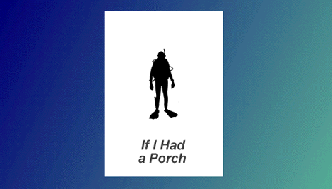

Welcome to If I Had a Porch,
and pardon me.
*
Hear what the critics (my friend Laura Cook)
have to say about Porch !
*
Table of Contents
- hope (the true meaning of Christmas)
- spoon - one woman's account of Delaware
- love -- oh, just read it
- joke
- miss
- what
- larry
- song
- ssim
- banks
- slack (the second moral-less fable)
- plus
- funt
- clink
This page is brought to you by
The Flexible Tubing Company
For a good time, nothing beats flexible tubing.
If I Had a Porch (http://www.umich.edu/~bing/PorchTOC.html)
©1995-1997 John Cady & his Lounge Life Press
Comments? Complaints? Tiparillo? Write to me: bing@umich.edu